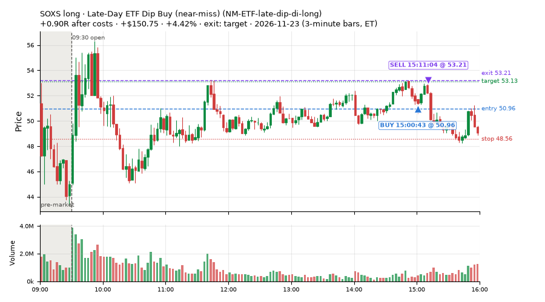
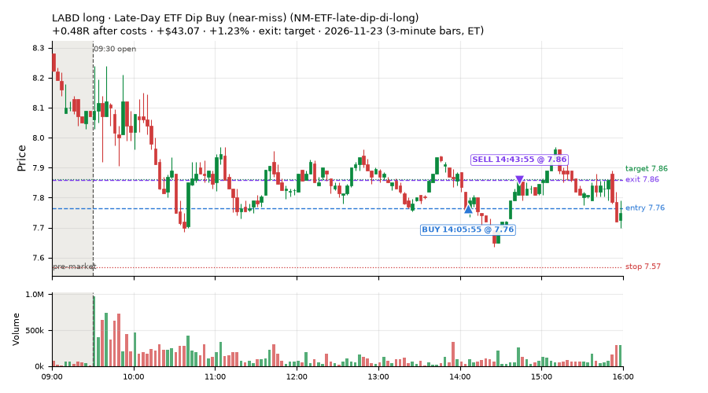
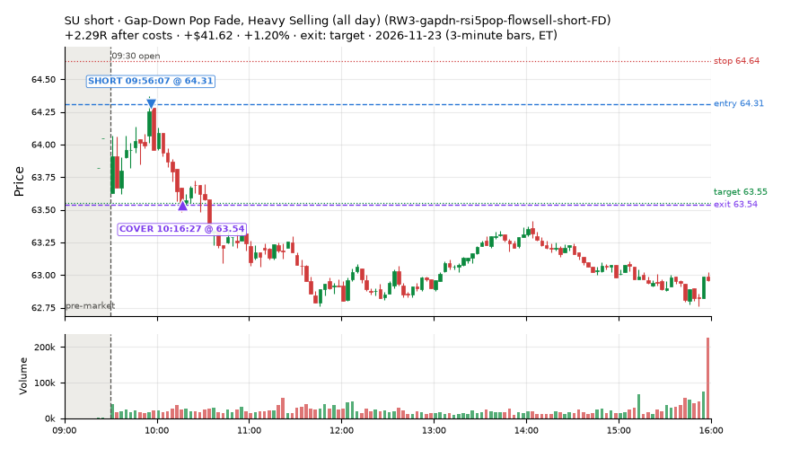
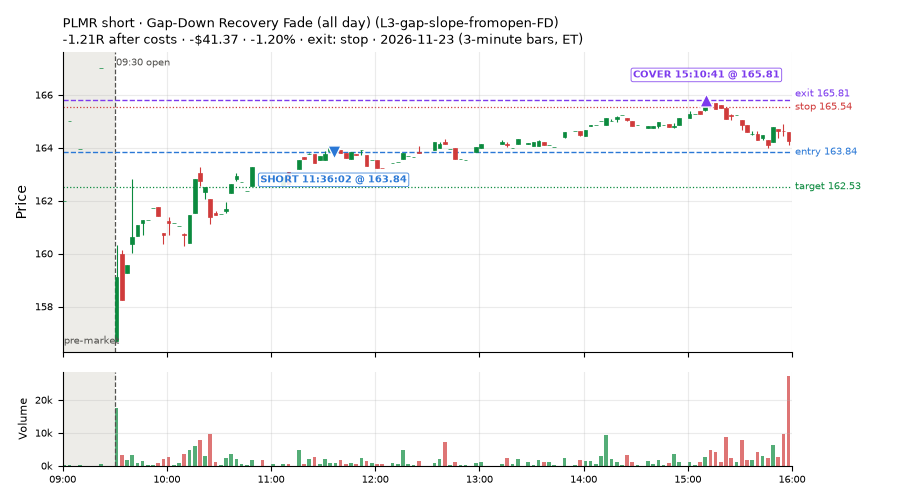
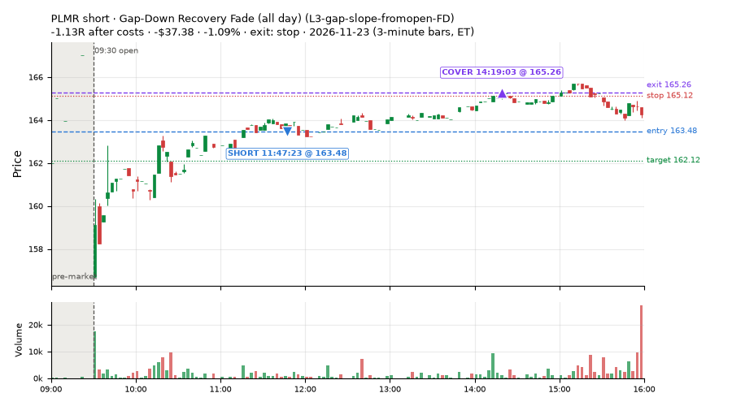
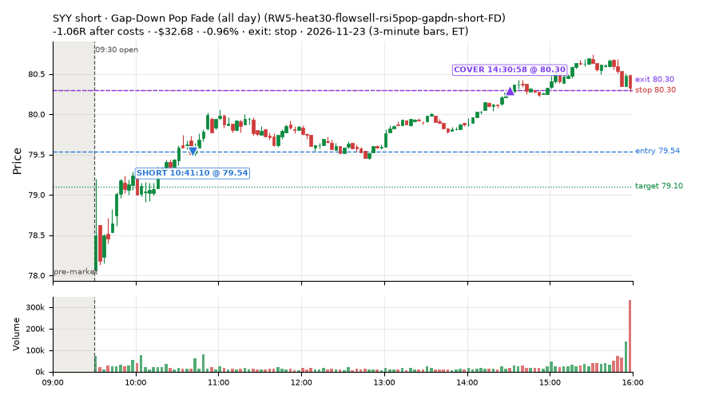
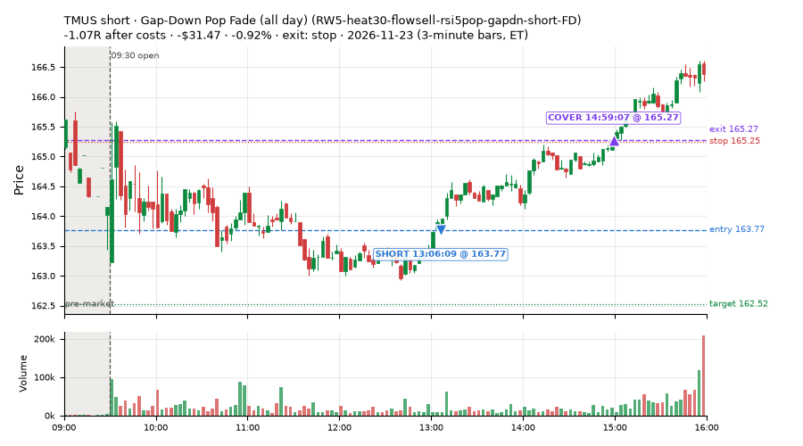
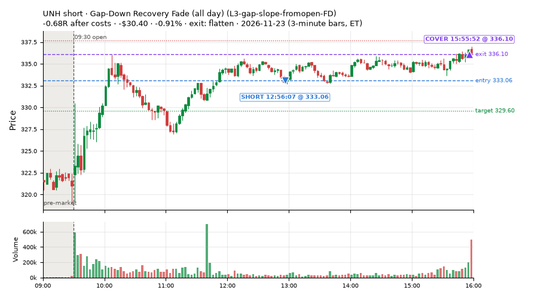

24 trades · win rate 58% · P/L $185.38
PROBATION: no live setup has passed both locked test periods. 10 owner-directed setups added 2026-10-08 (MarcoFlow top 5 + 5 new), untested live. RW6G1 (RW6 + VWAP band guard) added 2026-10-09, probation.

| Symbol | Setup | Side | In | Out | Entry | Exit | Exit reason | % gained | P/L |
|---|---|---|---|---|---|---|---|---|---|
| SOXS | Late-Day ETF Dip Buy (near-miss) (NM-ETF-late-dip-di-long) | long | 15:00 | 15:11 | 50.96 | 53.21 | target | +4.42% | $150.75 |
| LABD | Late-Day ETF Dip Buy (near-miss) (NM-ETF-late-dip-di-long) | long | 14:05 | 14:43 | 7.76 | 7.86 | target | +1.23% | $43.07 |
| SU | Gap-Down Pop Fade, Heavy Selling (all day) (RW3-gapdn-rsi5pop-flowsell-short-FD) | short | 09:56 | 10:16 | 64.31 | 63.54 | target | +1.20% | $41.62 |
| Symbol | Setup | Side | In | Out | Entry | Exit | Exit reason | % lost | P/L |
|---|---|---|---|---|---|---|---|---|---|
| PLMR | L3-gap-slope-fromopen-FD | short | 11:36 | 15:10 | 163.84 | 165.81 | stop | -1.20% | $-41.37 |
| PLMR | L3-gap-slope-fromopen-FD | short | 11:47 | 14:19 | 163.48 | 165.26 | stop | -1.09% | $-37.38 |
| SYY | RW5-heat30-flowsell-rsi5pop-gapdn-short-FD | short | 10:41 | 14:30 | 79.54 | 80.30 | stop | -0.96% | $-32.68 |
| TMUS | RW5-heat30-flowsell-rsi5pop-gapdn-short-FD | short | 13:06 | 14:59 | 163.77 | 165.27 | stop | -0.92% | $-31.47 |
| UNH | L3-gap-slope-fromopen-FD | short | 12:56 | 15:55 | 333.06 | 336.10 | flatten | -0.91% | $-30.40 |








Signal to fill: median 2s, 90th percentile 3s (24 trades). Bars close each minute; the order follows the bar close.
Best excursion (MFE): median 0.43R; worst (MAE) median 0.59R. 38% of trades never got +0.25R in our favour; 0 reached +1R and still closed at or below 0.
| Symbol | Setup | Best R | Worst R | Closed R |
|---|---|---|---|---|
| PLMR | L3-gap-slope-fromopen-FD | +0.36 | -1.06 | -1.21 |
| PLMR | L3-gap-slope-fromopen-FD | +0.16 | -1.05 | -1.13 |
| SYY | RW5-heat30-flowsell-rsi5pop-gapdn-short-FD | +0.13 | -1.01 | -1.06 |
| UL | RW5-heat30-flowsell-rsi5pop-gapdn-short-FD | +0.16 | -0.93 | -0.96 |
| TMUS | RW5-heat30-flowsell-rsi5pop-gapdn-short-FD | -0.03 | -1.02 | -1.07 |
| Entry time | Trades | Win | Avg R | P/L |
|---|---|---|---|---|
| 09:50-10:30 | 1 | 100% | +2.29 | $41.62 |
| 10:30-11:30 | 6 | 67% | +0.01 | $-10.11 |
| 11:30-13:00 | 6 | 17% | -0.62 | $-129.85 |
| 13:00-14:00 | 4 | 50% | -0.12 | $-19.48 |
| 14:00-16:00 | 7 | 86% | +0.34 | $303.20 |
| Setup | Trades | Win | Avg R after costs | Adj R (net of SPY) | Avg R ex-market (all sessions) | P/L |
|---|---|---|---|---|---|---|
| Gap-Down Recovery Fade (all day) (L3-gap-slope-fromopen-FD) | 5.0 | 20% | -0.55 | -0.47 | -0.02 (beta -0.66, n 193) | $-112.80 |
| Late-Day ETF Dip Buy (near-miss) (NM-ETF-late-dip-di-long) | 6.0 | 100% | +0.50 | +0.58 | +0.23 (beta +1.22, n 33) | $312.02 |
| Gap-Down Pop Fade, Heavy Selling (all day) (RW3-gapdn-rsi5pop-flowsell-short-FD) | 6.0 | 83% | +0.60 | +0.13 | -0.02 (beta -0.83, n 182) | $66.26 |
| Gap-Down Pop Fade (all day) (RW5-heat30-flowsell-rsi5pop-gapdn-short-FD) | 7.0 | 29% | -0.48 | -0.93 | -0.04 (beta -0.58, n 193) | $-80.10 |
Market direction (SPY, beta 1) accounted for $69.46 of today's $185.38; the rest ($115.92) came from the setups themselves. Avg R net of SPY: -0.19 (incl. a hedge leg's cost; report only).
4 setups live today. Today: 75 signals, 24 taken, 0 lost because another setup held the symbol (0%). Since 2026-10-06 (35 sessions): 5962 signals, 1452 taken, 205 lost to other setups (3%). Peak open positions today 18 of 77 slots. Earnings blackout removed 148 symbols before scanning.
Simulated playing time (not live): 4483 what-if trades of signals not taken, avg +0.11R, 62% winners; of them 205 lost to another setup (avg -0.10R).
Silent: intraday_momentum · Crowded out: MF4-h40-open-flowsell, MF3-open-flowsell-rsi5hi, MF5-flowsell-vwapup-rsi5hi · Starved: MF2-open-rsimidhi-flowsell
| Prio | Setup | Today sig / taken | Sessions | Signals / taken / trades | Taken/day | Expected/day | Lost to other setups | Lost to (setup n) | Top skip reasons | SIMULATED: not-taken n / avg R / win | Verdict |
|---|---|---|---|---|---|---|---|---|---|---|---|
| 1 | Late-Day ETF Dip Buy (near-miss) NM-ETF-late-dip-di-long | 6 / 6 | 9 | 39 / 33 / 33 | 3.67 | – | 0 | – | daily loss cap 5, spread / quote / size 1 | 6 / +0.26R / 83% | ok 18.3 entries/week |
| 2 | Gap-Down Pop Fade (all day) RW5-heat30-flowsell-rsi5pop-gapdn-short-FD | 8 / 7 | 27 | 280 / 193 / 193 | 7.15 | 12.79 | 0 | – | spread / quote / size 38, daily loss cap 26, not shortable / shorts off 22 | 87 / +0.00R / 51% | ok 35.7 entries/week |
| 3 | Gap-Down Pop Fade, Heavy Selling (all day) RW3-gapdn-rsi5pop-flowsell-short-FD | 8 / 6 | 27 | 318 / 182 / 182 | 6.74 | 13.59 | 1 | CWT14-failbrk-pdl-p10-lowvol-long 1 | spread / quote / size 53, daily loss cap 42, not shortable / shorts off 40 | 136 / +0.22R / 63% | ok 33.7 entries/week |
| 4 | Gap-Down Recovery Fade (all day) L3-gap-slope-fromopen-FD | 53 / 5 | 19 | 3345 / 193 / 193 | 10.16 | – | 66 | L3-gap-slope-fromopen-FD 66, L3-gap-slope-rsi5hi-FD 14 | not shortable / shorts off 2112, per-setup cap 648, spread / quote / size 164 | 3145 / +0.16R / 64% | ok 50.8 entries/week |
Every trade is attached as a CSV you can open and edit in Excel or Google Sheets. Live page: https://misiti15.github.io/MCF/live/